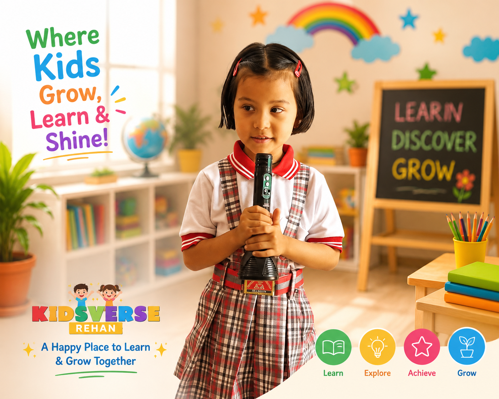
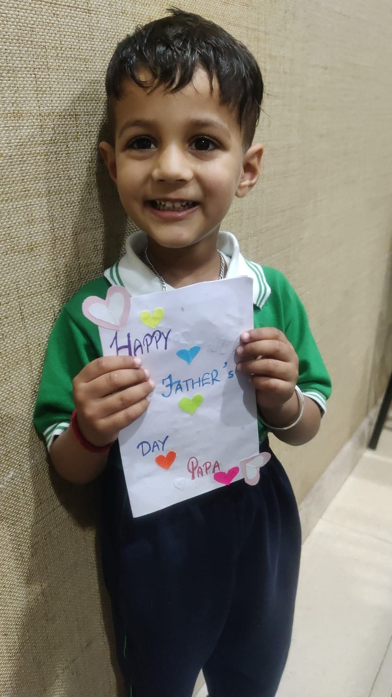

Kidsverse Grade 1 Programme
Primary learning with confidence, clarity and care.
Grade 1 at Kidsverse builds strong English, Hindi, Maths, EVS, handwriting, communication, values and study habits for children entering formal schooling.

Grade 1 foundation
The year where children become confident primary learners.
Grade 1 requires a caring but structured environment. Kidsverse supports children with concept clarity, regular practice, communication, values and personal attention so the shift from preschool to primary school feels smooth.
Learning areas
What children learn in Grade 1.
Complete primary foundation with academic and personality development.
English
Reading, writing, vocabulary, grammar basics, speaking and comprehension.
Hindi
Akshar, matra words, reading practice, handwriting and simple sentences.
Maths
Numbers, number names, tables, operations, shapes and problem solving.
EVS
Plants, animals, family, community, safety, festivals and environment.
Handwriting & notebooks
Neat work, spacing, page discipline and regular written practice.
Communication & values
Speaking, confidence, responsibility, respect and teamwork.
A day at Kidsverse
Primary learning with personal attention.
Grade 1 routines include concept learning, written work, reading, revision and confidence-building activities.
Conversation, routine and value focus.
English, Hindi, Maths or EVS concepts.
Notebook practice with correction support.
Words, sentences and comprehension.
Hands-on learning and expression.
Daily recap and homework clarity.
By the end of Grade 1
Your child builds a strong base for higher classes.
Reads simple text with confidenceWrites neatly in notebooksSolves basic maths confidentlyUnderstands EVS conceptsBuilds homework rhythmSpeaks and participates better


Parent questions
Common Grade 1 questions.
Is Grade 1 available at Kidsverse?
Yes, Kidsverse offers Grade 1 along with preschool and after-school support.
Will the focus be only academics?
No. We focus on academics, communication, values, habits and confidence together.
Do you support homework and revision?
Yes, children are guided to build regular work habits and concept clarity.
Grade 1 admission enquiry
Give your child a strong primary school foundation.
Share details and we will guide you on class fit, readiness and school visit timing.